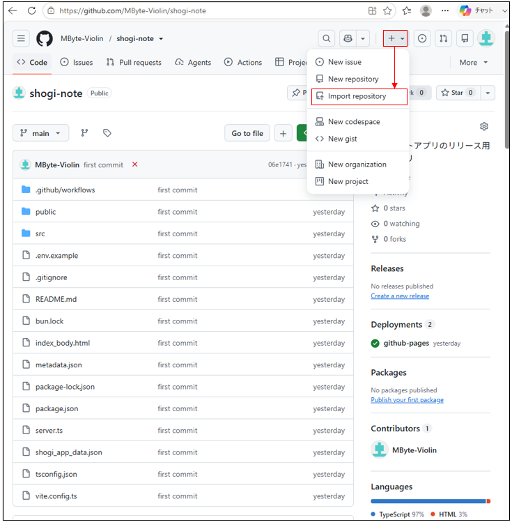
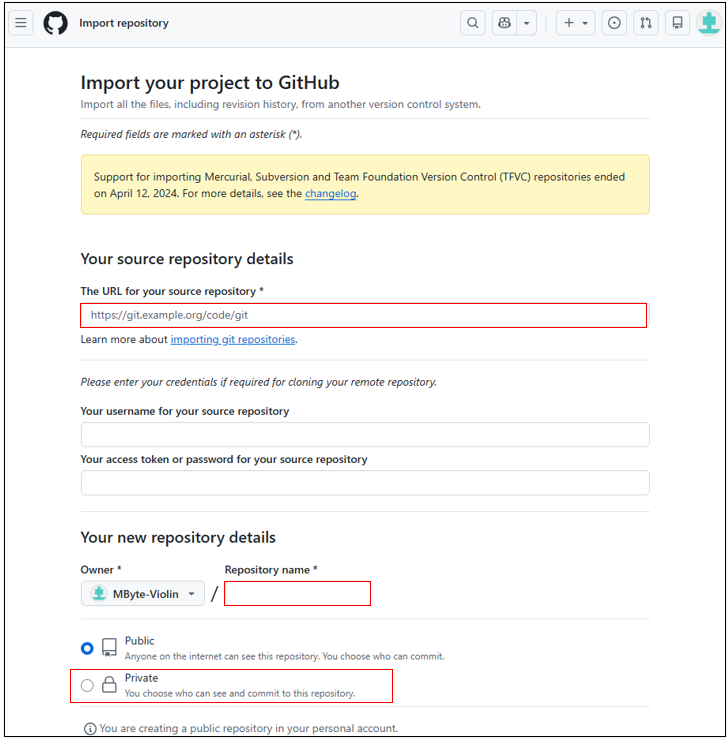
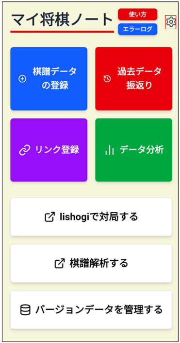
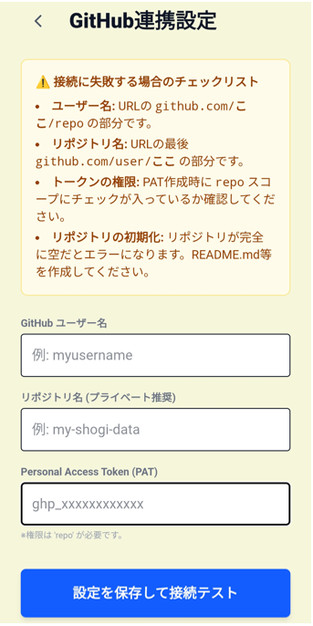

・Githubの連携設定を行う意味
Githubは本来ツール開発者のデータ管理でよく利用されるツールです。
長期間ご利用する場合、ご自身の強み/弱みの傾向は変化しています。
そのため、適度なタイミングでデータ整理してバージョン管理することで、今後の勉強計画を精度よく立てることができるようになります。
本設定はGithubの無料サーバーにそのデータを管理するために行います
(1)Githubアカウントの作成
Githubのアカウントを作成してください。下記に設定方法例を示します。
(2)Github Access Token(classic)の生成
Github Access Token(classic)を生成してください。下記に設定方法例を示します。
※権限は「repo」だけで充分です。
※このキーはパスワードと同じくらい重要です。絶対に他人に知られない様に厳重管理してください。
(3)プライベートリポジトリへインポート
下記リンクへアクセスします。
①レポジトリURLをコピーしてください
下図の「+」ボタンを押してから、「Import repository」を押す

②①でコピーしたレポジトリを「The URL for your soruce repository」に貼り付ける
レポジトリ名を決める
Privateを選択する
一番大事なことなのでもう一度
Privateを か・な・ら・ず 選択する
※⚠デフォルトはPublicレポジトリになっていることがあります。⚠
右下にある「Begin Import」ボタンを押す。

・リポジトリ情報を入力する
右上の歯車マークボタンを押してください

リポジトリ情報を入力すれば完了です。
一度入力した後は、QRコードから設定を読み取れるようになります。
